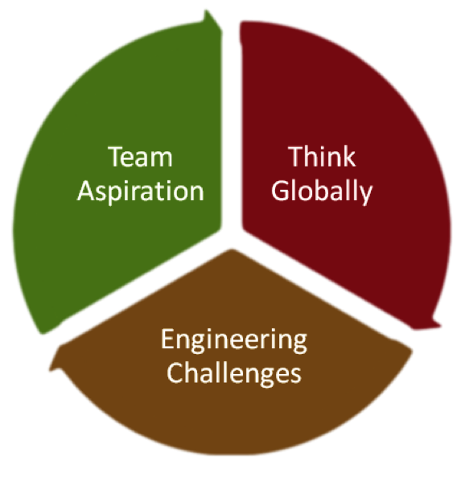

SECTION 8: YOUNG MEMBERS GROUP
8.1 Description and General Information
Young Members Group (YMG) Committee was inaugurated on 21 October 2011. The first YMG was formed by students from the University of Hong Kong (HKU) and fresh graduates from the City University of Hong Kong (CityU). The provisional student chapter of the Hong Kong University of Science and Technology (HKUST) was formed in April 2013.
YMG is a platform to gather young persons and students to organize activities in line with our missions. In these few years, YMG has been successfully developed and completed several self-financed engineering-based service trips in the Mainland China and Cambodia.
YMG's slogan is "Enlightened with Engineering, Serve the Community".
Its missions are to:
- Create a sense of excitement and enthusiasm about solving technical development problems within cultural and social context.
- Work with EWB-HK to transfer appropriate technologies to the community.
- Encourage young generation to put the missions of EWB-HK into practice.
8.2 Objectives
- Recruit members and volunteers in tertiary educational institution.
- Connect with student chapters of overseas EWBs.
- Cooperate with tertiary educational institutions to promote the works of EWB-HK
- Cultivate the leadership and spontaneity of students.
- Participate in the activities organized by EWB-HK.
- Promote practical application of engineering knowledge amongst students.
- Coordinate and review joint student chapter or partnering projects and activities.
- Provide guidance and mentoring support to Student Chapters to enrich their individual potential and team development.
- Develop relationships with faculties of tertiary educational institutions, professional and institutional partners.
- Assist in locating potential funding sources.
- Assist in strategic planning for YMG.
- Promote and spread the spirit and activities of YMG among institutions.
- Review and endorse the annual plans as proposed by student chapters.
- Endorse the annual appointment of student chapter’s committee.
8.3 Core Values
8.4 Committee Structure
YMG is led by a Committee Chairman. This position is appointed directly by EWB-HK Board of Directors. The appointment remains effective until Chairman resigns or is replaced by the Board of Directors, via written notification.
Committee Chairman determines the composition of the Committee and the Committee Members. Among these he/she shall appoint a Committee Secretary and a Treasurer.
Roles of these position are defined as following:
Chairman
1. Overall leadership of the Committee
2. Develop and maintain Committee Annual Plan
3. Supervise overall operations to fulfil missions and objectives of the Committee
Secretary
1. Convene Committee meetings
2. Maintain and update Committee Member list, CV of instructors,trainers, advisors, etc.
3. General Secretarial work
4. Ensure compliance to the Personal Data (Privacy) Ordinance
Treasurer
1. Keeping full and accurate records of all financial transactions for the Committee
2. Present a full financial report in EWB-HK Annual General Meeting
3. Manage sponsorship and donations
4. Effect payments on behalf of the committee
8.5 Global Citizenship Program
The UN Sustainable Development Goals have provided a key challenge for todays engineers in a humanitarian, ethical and technical perspective. The education of the engineer is very heavily focused on the technical aspects. The challenge now is to develop in our young engineers the social responsibility to strive for sustainable human development, the UN SDG’s and all Global Challenges.
Engineers, who possess technological solutions to global development problems and challenges, play an important role in promoting sustainable development and implementing innovative solutions. The EWB-HK Global Citizenship Program creates a real and transformative experience by envisaging engineering and science students to commit themselves in building a sustainable world with engineering solutions and becoming our future global leaders in sustainable development.
The program offers a real and transformative experience to plan and implement solutions to engineering based projects to achieve the SDG’s. The GCP Program Goal is to provide a platform for future engineering leaders to explore the global challenges, to serve the society proactively with global vision, to contribute to the sustainable development goals as global citizens.
The Program Approaches Awareness Building, Community Services, Capacity Building, Appropriate Technology, Network Building.
It delivers experiences through 7 Workshops; 2 Local Community Service Excursions; 1 International (Myanmar) Excursion; and a Post Trip Evaluation/Ideation Workshop. The program is also supported by an Industry Mentorship program. The outcome of the program is the “Change” of young engineers in the sense of global citizenship. They advance from a conventional engineer to being an engineer with global vision, capable to embrace cross-discipline collaboration.
Details on the EWB-HK Global Citizenship Program can found in Appendix 8.5.1